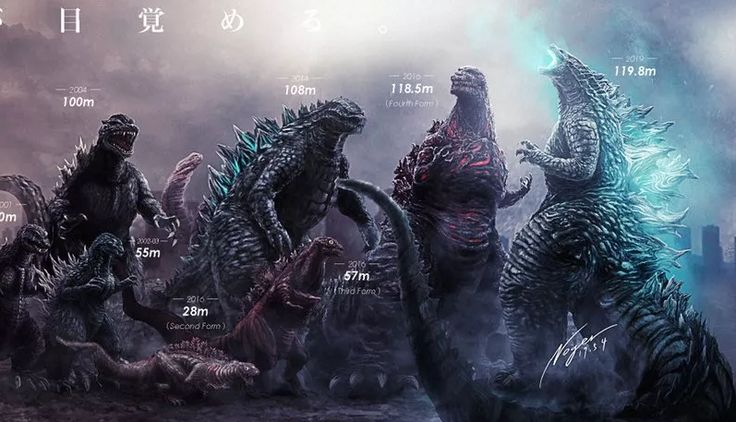
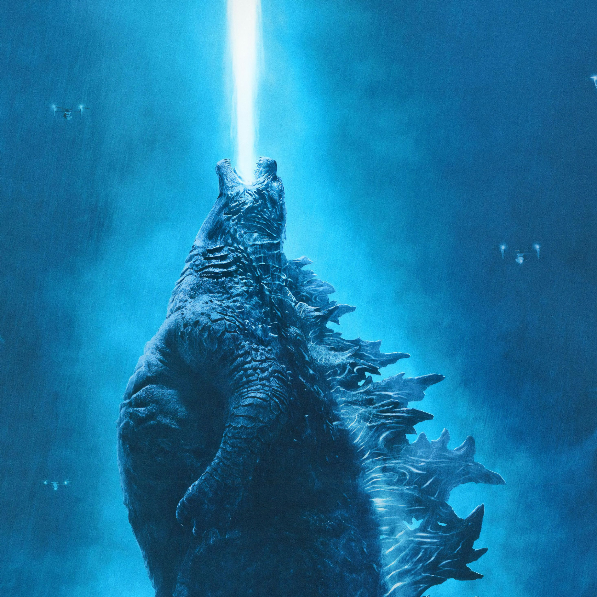
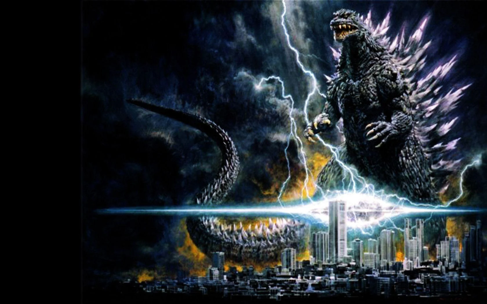

Find, Label, and Study
We Must Find our Enemy, So That We May Study and Eliminate Them
- Godzilla
- Anguirus
- Giant-Lizard
- Giant-Octopus
- King-Kong
- Mothra
- Mystery-Bones-of-Infant Island
- Rodan
- King-Ghidorah
- Ebirah
- Giant-Condor
- Giant-Eagle
- Giant-Praying-Mantis
- Kamacuras
- Minilla
- Kumonga
- Manda
- Gorosaurus
- Baragon
- Varan
- Gabara
- Maneater
- Hedorah
- Gigan
- Jet-Jaguar
- Megalon
- Mechagodzilla
- King-Caesar
- Titanosaurus
- Shockirus
- Biollante
- Dorat
- Godzillasaurus
- Mecha-King-Ghidorah
- Battra
- G-Force-MechaGodzilla
- Super-MechaGodzilla
- Garuda
- Fire-Rodan
- Baby-Godzilla
- Little-Godzilla
- Godzilla-Junior
- Fairy-Mothra
- Space-Godzilla
- M.O.G.U.E.R.A.
- Land-Moguera
- Star-Falcon
- Burning-Godzilla
- Destroyah
- Millenian
- Orga
- Meganulon
- Meganula
- Megaguirus
- Mechagodzilla/Kiryu
- Modified-Type-3-Kiryu
- Kamoebas
- Zilla
- Modified-Gigan
- Monster-X
- Keizer-Ghidorah
- Godzilla
- Servum/FlyingServum/Worm-typeServum
- Godzilla-Filius
- Godzilla-Earth
- Mechagodzilla
- King-Ghidorah
- Mothra
- Godzilla
- Juvenile-Godzilla
- Godzilla
- Muto/Male/Female/QueenMuto
- Godzilla
- Mothra
- King-Ghidorah
- Rodan
- Methuselah
- Scylla
- Behemoth
- King-Kong
- Leviathan
- Mokele-Mbembe
- Baphomet
- Sekhmet
- Ahmuluk
- Yamata-No-Orochi
- Typhon
- Quetzalcoatl
- Tiamat
- Abaddon
- Unidentified-Anguirus-like-Titan
- NaKika
- Margygr
- Warbat
- Mantleclaw
- Hollow-Earth-Lizard
- Hellhawk
- Unidentified Hollow Earth Titan
- MechaGodzilla
- Skullcrawler
- Skar-King
- Suko
- Shimo

